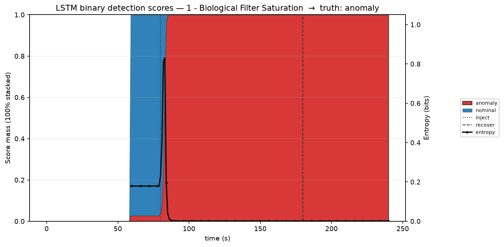

Scenario 01 · Biological Filter Saturation · inject 80 s · recover 180 s
Nominal mass dominates once the 60 s window fills
P(anomaly) rises within a few seconds · entropy spikes at the flip
Observation fires when P(anomaly) ≥ 0.5 — that is what can arm diagnosis